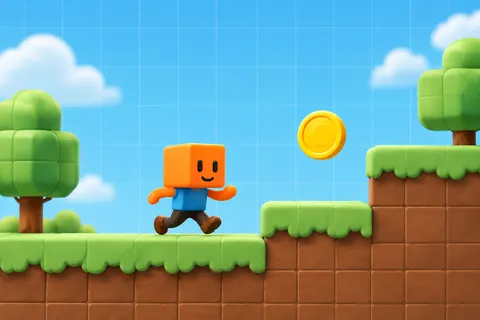

制作ガイド

素材・CSSの設計見本です。実サイトや円環の動作試作ではありません。CSS値は実装後のレンダリングで調整してください。

Current Taskは回転させず、不透明な平面に置きます。
陶器面と細い境界。カードよりも控えめな影。
上のボタンに処理はありません。
本文、比較表、出典は平面で読みます。背景や素材の模様を文字の下へ通しません。
円環は記事探索に限定し、表や制作手順の理解を優先します。
カードの採用外観はreference/01、画面の順序・操作はdocsを参照。